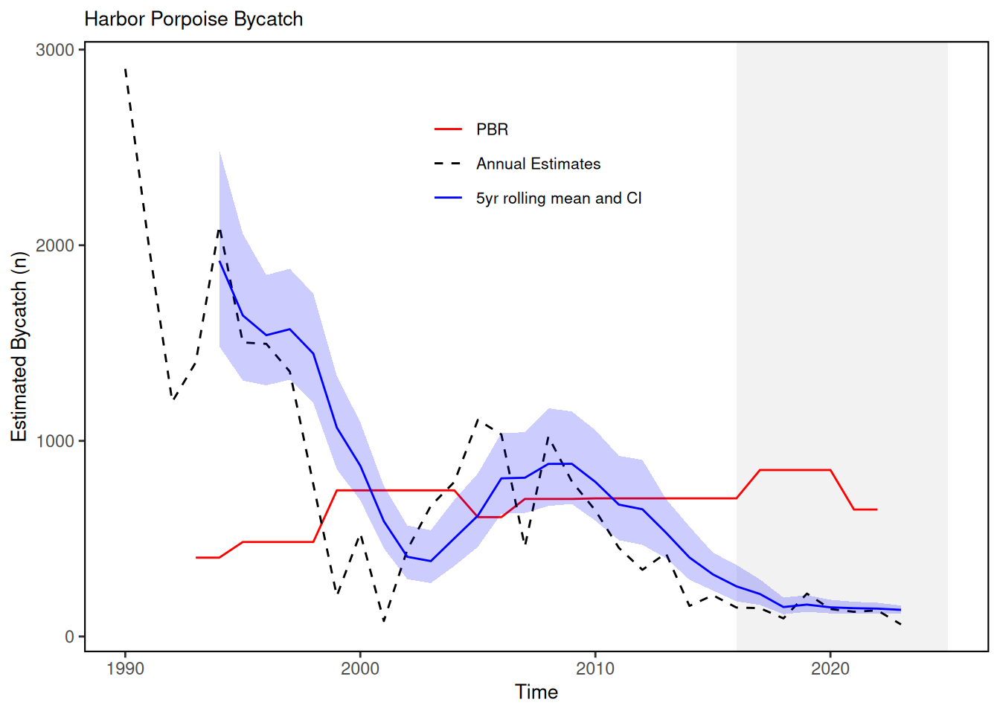

27 Harbor Porpoise Bycatch
Last updated February 13, 2026
Description: The data presented here are a time series of estimates of harbor porpoise bycatch from U.S. North Atlantic commercial fisheries.
Contributor(s): Debra Palka, Kristin Precoda
Affiliations: NEFSC
Indicator Family:
Indicator Category:
Synthesis Theme:
27.1 Introduction to Indicator
Marine mammals including harbor porpoise are protected under the Marine Mammal Protection Act (MMPA). The goal of the MMPA is to obtain and maintain optimum sustainable populations of marine mammals and to ensure they continue to function as significant elements of marine ecosystems. Protected species management objectives include managing bycatch to remain below potential biological removal (PBR) thresholds, recovering endangered populations, and monitoring unusual mortality events. Here we report estimated bycatch and PBR thresholds for harbor porpoise in the Northeast U.S., which are subject to a Take Reduction Team under the Marine Mammal Protection Act.
27.2 Key Results and Visualizations
The total estimated bycatch from all U.S. North Atlantic commercial fisheries is plotted by year. In 2023, a total of 62 harbor porpoise were estimated to have been bycaught from 6 fisheries (including bottom gillnets, drift gillnets, bottom trawls, midwater trawls, pair trawls, and pelagic longline). Harbor porpoise bycatch estimates have been below PBR thresholds since 2010, thus meeting a management objective (Fig. 1). Earlier, however, bycatch was above PBR.
Mid-Atlantic

New England

27.3 Implications
A bycatch reduction plan developed by the Take Reduction Team was needed to reduce the bycatch of harbor porpoises starting in 1997 (https://www.fisheries.noaa.gov/new-england-mid-atlantic/marine-mammal-protection/harbor-porpoise-take-reduction-plan; Fig. 1). The reduction in harbor porpoise bycatch since 2010 is probably related not only to the Take Reduction Team’s bycatch mitigation plan but also to a corresponding decrease in gillnet fishing effort and to seasonal shifts of harbor porpoise that appear to be related to climate changes.
27.4 Indicator statistics
Spatial scale: US waters from North Carolina to Canada, from the U.S. coastline to the U.S. exclusive economic zone 200 nautical miles offshore, thus including all EPUs, the full shelf and beyond.
Temporal scale: Annual from 1990 to 2023.
Variable definitions
27.5 Get the data
Point of contact: Debra Palka (debra.palka@noaa.gov)
ecodata dataset: ecodata::harborporpoise
Tech Doc link: https://noaa-edab.github.io/tech-doc/harborporpoise.html
27.5.1 Public Availability
Source data are publicly available.